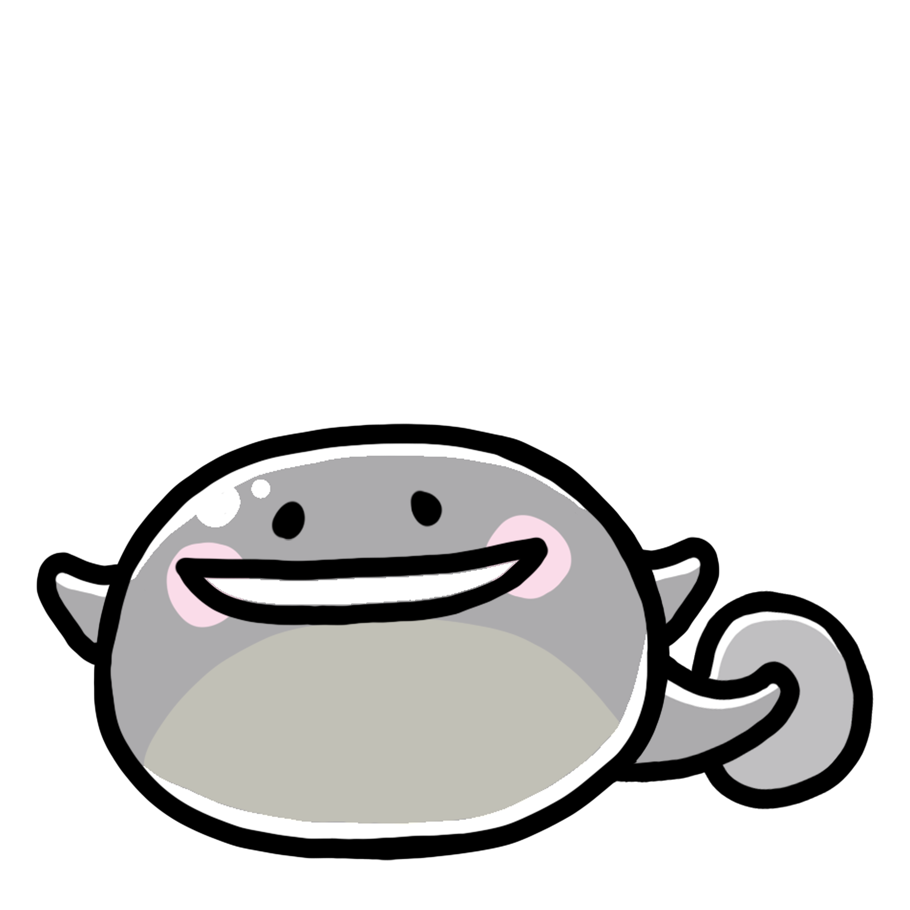
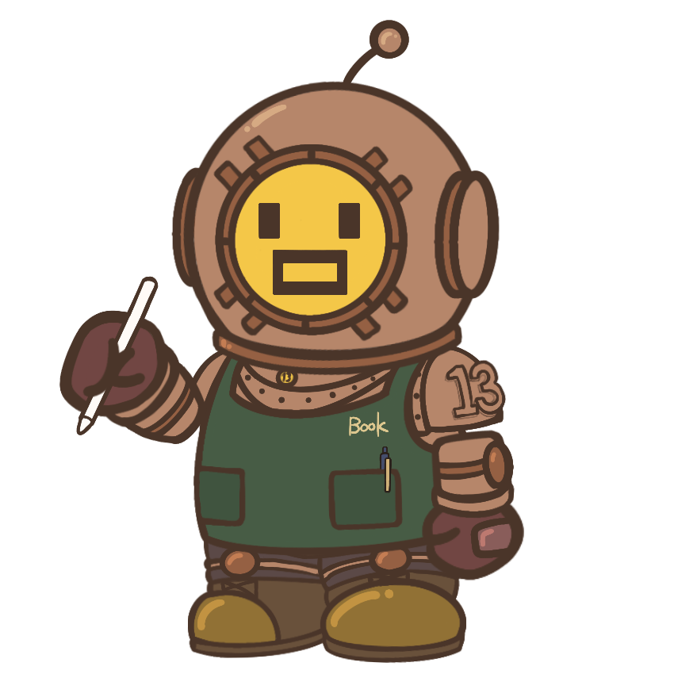

誕生日イラスト 02
キャラクターイラスト

色も、かたちも、世界観も。まずは制作例をご覧ください。
KEROCTに集うクリエイター。それぞれの作品から、作風に触れてみてください。

LOGO / STREAM DESIGN
やわらかな色合いから、和のモチーフまで。
ロゴと配信用デザインの制作例をご紹介します。

ILLUSTRATION / EMBLEM LOGO
生き生きとした表情と、遊び心のあるポーズ。
キャラクターイラストとエンブレムロゴをご紹介します。
活動の顔になるロゴから、配信を彩るデザインまで。
通常納期は7〜14営業日程度。内容・点数により前後します。
全メニュー・料金を見る ↗つくりたいものや気になることから、お聞かせください。
Webチャットで、依頼内容やイメージをお伝えください。
制作内容、料金、スケジュールを確認して進めます。
ラフや仕上がりを確認しながら、完成へ。必要に応じてDiscordで打ち合わせを行います。
Webチャットから、制作についてご相談いただけます。